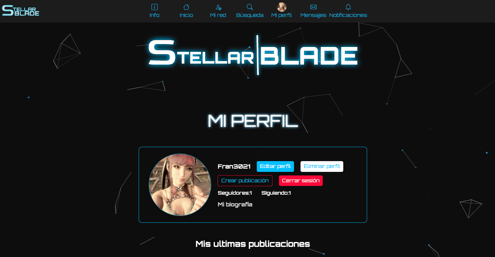

Red social Stellar Blade
PYTHON
DJANGO
SQL
HTML
JAVASCRIPT
CSS
Red social inspirada en el videojuego Stellar Blade, creada con Python y Django, utilizando SQL para la base de datos. También he trabajado con Sass para los estilos y he incorporado JavaScript para mejorar la experiencia del usuario.